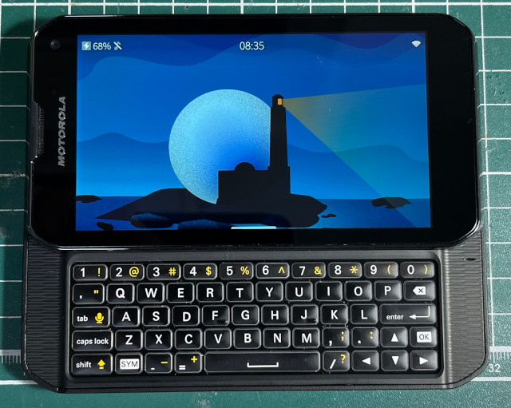

參考資訊：
https://wiki.merproject.org/wiki/Adaptations/libhybris
https://vladislavonline.com/sailfishos-for-photon-q/?i=2
https://xdaforums.com/t/sailfishos-3-for-photon-q-and-siblings.3870979/
步驟如下：
1. https://github.com/steward-fu/website/releases/download/xt897/asanti_c_sprint-user-4.1.2-9.8.2Q-122_XT897_FFW-5-6-release-keys-cid9.xml.zip
2. https://github.com/steward-fu/website/releases/download/xt897/twrp-3.0.2-0-asanti_c.img
3. https://github.com/steward-fu/website/releases/download/xt897/cm-11-20150626-SNAPSHOT-XNG3CAO1L8-moto_msm8960_jbbl.zip
4. https://github.com/steward-fu/website/releases/download/xt897/sailfishos-moto_msm8960_jbbl-release-4.4.0.68-alpha-25.zip
完成
